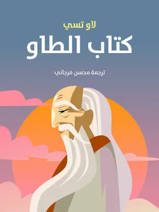

كتاب الطاو

قراءة عربية أصلية محددة النطاق في الصفحات 11 إلى 15، 26 إلى 32 من ملف PDF المرتبط، وليست تلخيصا كاملا للكتاب. نناقش ما تدعمه هذه المقاطع فقط.
موظف أرشيف إمبراطوري اسمه لاو تسي
يروي المترجم أنه لم يكن في الأرشيف الحكومي التابع لبلاط مملكة «تشو» من يتقن أصول المراسم ويفهم أسس العلاقات العامة مثل لاو تان، وقد قالت عنه أشهر مدونة في التاريخ الصيني «سجلات تاريخية» للمؤرخ سيما شان إنه أحد مواطني مملكة تشو عاش إبان القرن الرابع قبل الميلاد، ولم يكن كاهنًا ولا فيلسوفًا بل مجرد موظف أرشيف إمبراطوري قصده الباحثون والدارسون ليتعلموا على يديه أصول المراسم والمعاملات. وقيل إن هذا الموظف البسيط كان أبرع رجل في الإمبراطورية كلها في خبايا تلك الشئون، حتى إن كونفوشيوس نفسه سافر إليه طلبًا للعلم، غير أن هناك من يعترض على صحة الواقعة. ويصوره ابن زمان متقلب وأحوال مضطربة من حروب وفتن ومؤامرات، ثقلت عليه وطأة الأيام فتشوش يقينه بالمثل الكونفوشية السائدة وكفر بما كان يجيده من مراسم ملكية، وهو في هذا لا يختلف عن كثير ممن عاشوا في زمن الربيع والخريف الذي شهد ازدهار حركة التأليف الفلسفي في الصين القديمة. ثم تأتي فصول الكتاب الأولى بنصوصها المكثفة: السر المعمى هو الطريق الفاتح أبوابه فتتجلى دفائن ألغازه.
زاوية وحدود القراءة
قراءة موجزة من ص ١١ إلى ص ١٥ ومن ص ٢٦ إلى ص ٣٢ من أصل ١٥٨ صفحة، تعرض مقدمة المترجم؛ لاو تسي موظف الأرشيف في بلاط مملكة تشو، ثم مقاطع من فصول الكتاب الأولى، لا الكتاب كاملًا.
الطبعة والقراءة
هذه النسخة من الكتاب صادرة ومتاحة مجانًا بموجب اتفاق قانوني بين مؤسسة هنداوي والسيد الدكتور محسن فرجاني.
تنزيل PDF المجاني ↓ القراءة والمصدر الرسمي ↗